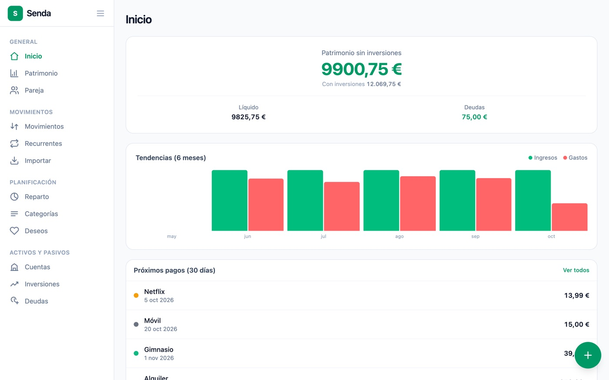
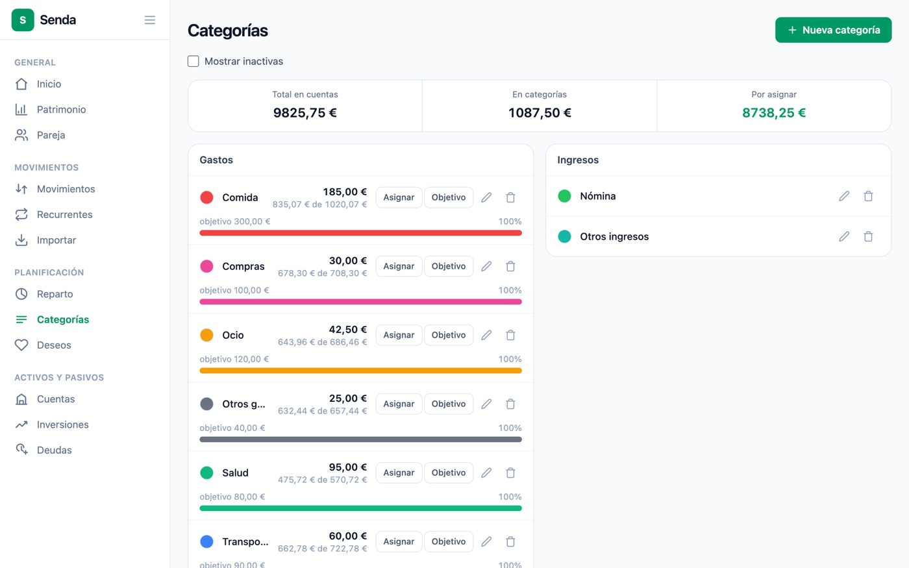
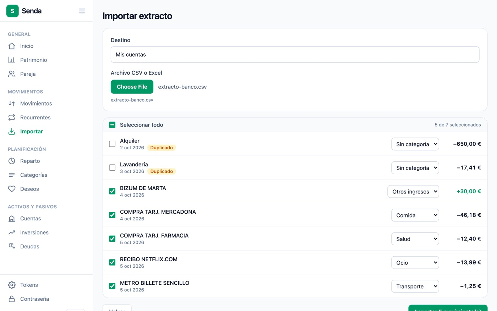
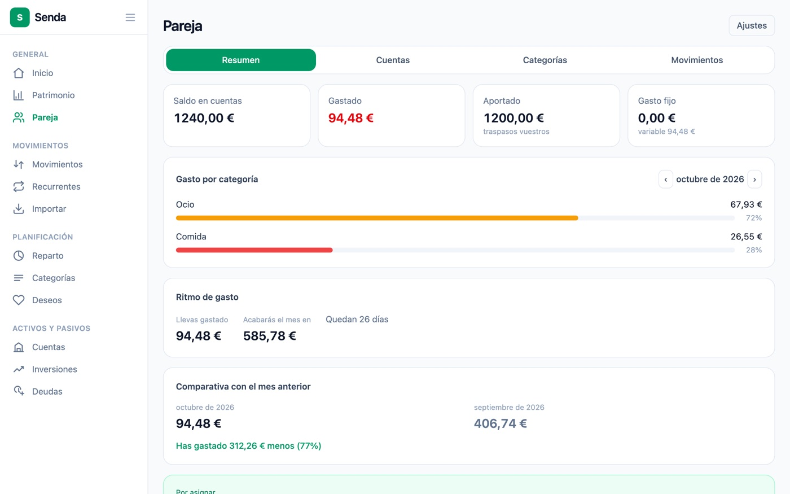
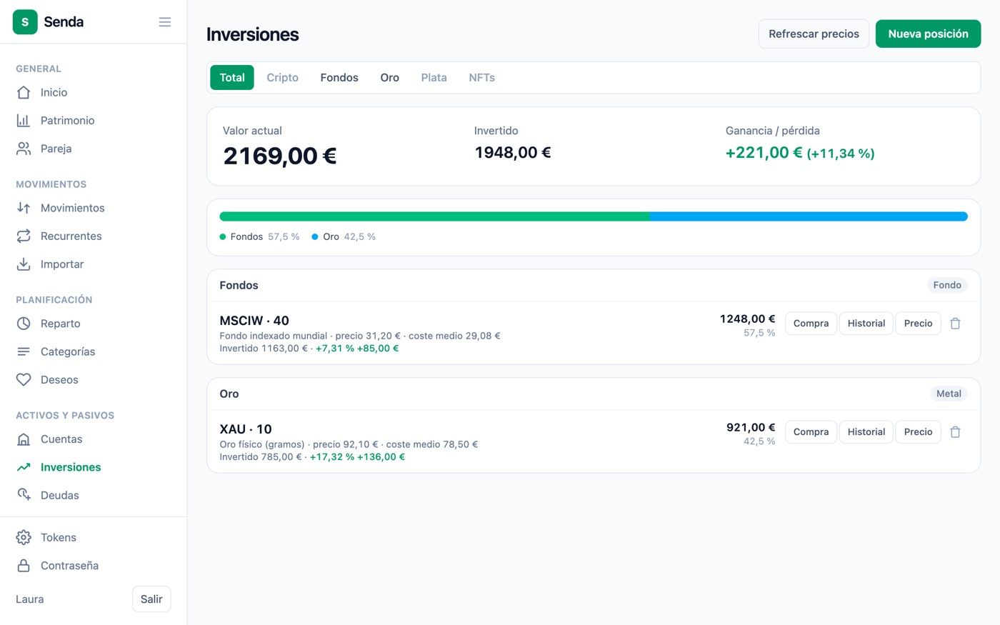

Senda
Una app web de finanzas personales para usar en casa: apuntas o importas tus movimientos, repartes el sueldo en sobres y ves cuánto tienes, cuánto debes y en qué se te va el dinero. Los datos no salen de tu máquina.
- Cuándo
- 2026 · Proyecto personal, en uso real
- Rol
- Todo el proyecto, en solitario
- Stack
- Enlaces
- senda Código, documentación y decisiones técnicas
De dónde viene
Quería controlar mis gastos e ingresos con una app hecha a mi medida, sin dar mis movimientos a ningún servicio de terceros. Y quería construirla entera, base de datos, API y web, aunque costara más, por lo que iba a aprender. Por eso tiene rigor de producción aunque la use solo en casa: multiusuario y con los datos separados desde el primer día, para no tener que rehacer la base de datos y la seguridad más adelante. La uso a diario desde septiembre de 2026.
Y como la uso de verdad, sigue cambiando: cada problema que encuentro usándola se convierte en una mejora. Por ejemplo, los Excel de algunos bancos ponen un signo menos tipográfico que hacía que los gastos se descartaran sin avisar, y la previsión de cómo acabarías el mes repartía también los gastos fijos entre los días que quedaban, como si fueran a repetirse.
Qué es
- Movimientos por categoría, con resumen del mes, vista anual y tendencia
- Importar el extracto del banco en CSV o Excel, con detección de duplicados
- Presupuesto por sobres y reparto del sueldo por porcentajes
- Cuentas, deudas con abonos parciales, inversiones con coste medio ponderado y patrimonio neto
- Un espacio compartido para una cuenta conjunta, separado de lo personal de cada uno
- Multiusuario desde el primer día; 450 tests en la API y 211 en la web
Arquitectura
Una API en capas estrictas con un paquete por dominio: añadir un apartado nuevo no toca los que ya existen.
Pulsa una pieza del diagrama para ver qué hace y con qué se conecta.
- Web
- Una SPA en React con componentes propios. Guarda la sesión como un JWT y lo envía en cada petición. Por eso tiene una CSP estricta: un XSS sería la vía directa para robar ese token.
- Atajo de iOS
- Permite apuntar un gasto desde un atajo o un script sin usar la contraseña. Usa un token personal del que solo se guarda el hash, y que solo puede leer las categorías y crear un gasto: todo lo demás devuelve 403.
- nginx
- Sirve la web y pasa
/api/a la API, con cabeceras de seguridad. Es lo único que publica un puerto, y no arranca hasta que la API está sana. La instalación de servidor está pensada para ir detrás de una VPN privada, sin abrir nada a internet. - API
- Capas estrictas
controller → service → repository, y nunca expone las entidades: siempre DTOs. Cada recurso de un espacio compartido pasa por una guardia que responde 404 si no eres miembro, igual que con los datos de otro usuario. - Precios cripto
- CoinGecko en una sola llamada, con Coinbase de respaldo para lo que falte. Timeouts cortos, caché en memoria y, si fallan los dos, la posición sale sin precio en lugar de romper la pantalla.
- PostgreSQL
- El dinero es
BigDecimalen Java yNUMERICen la base de datos, nuncafloat. El esquema lo cambian solo migraciones Flyway, versionadas desde el primer día.
Capturas
Todas las capturas son de una instalación de prueba con datos inventados.





Más detalles del proyecto
El repositorio tiene la arquitectura, la documentación de la API, los registros de decisiones y el runbook para instalarla en un servidor de casa.